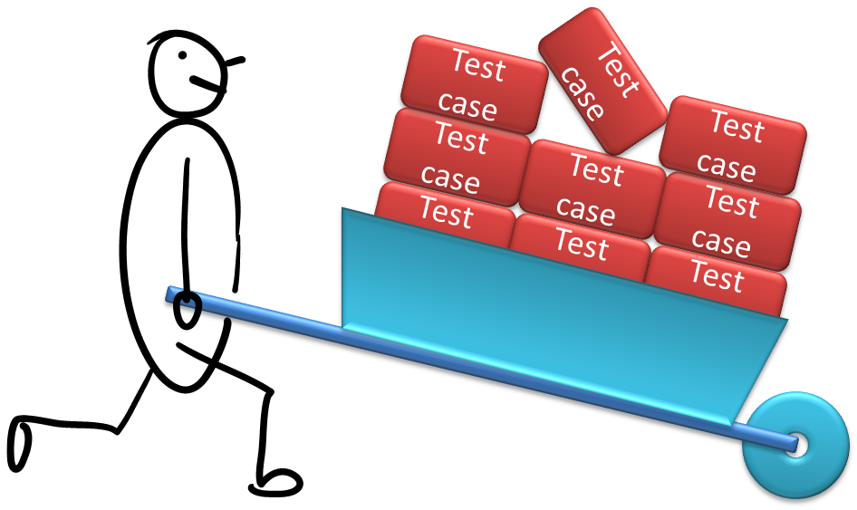

Lecture 9: Product functional. What about quality?
Part 1 - Quality Assurance: Testing and Beyond [35 minutes]

|
Overview: The full system should be put through intensive testing before release, even if components had been tested earlier. Other QA techniques such as code reviews, static analysis etc. can complement testing. Topics: system testing, acceptance testing, test coverage, GUI testing, other QA techniques |
Resources:
- Code coverage tools: You are not required to use code coverage tools in the project.
- You can watch this video to get an idea of how a coverage tool works. It describes EclEmma, a coverage tool for Java.
- [Blog post] How much coverage is enough coverage? - A *must read* post from the Google Testing Blog.
- Interesting side reading
- [Dev opinion] Don't waste time on code reviews
- [Blog post] Conversation with a Test Engineer at Google - A post from the Google Testing Blog.
- [eBook] If testing intrigues and interests you (a sign that there is a great software engineer inside you), you will like The Way of Testivus (funny, and full of wisdom :-)
- [Web article] If You Want to Talk Like a Silicon Valley CEO, Learn This Phrase, An article from the Mashable about dogfooding
- [Web article] How to lose $172,222 a second for 45 minutes - An article about a software bug that make a company lose $460 million
- [Post from Google Testing Blog] Measuring coverage at Google
Part 2 - Heuristics for Better Test Case Design [45 minutes]
|  |
Overview: Techniques such as equivalence partitioning and boundary value analysis can be used to increase effectiveness and efficiency of testing. Topics: test case design approaches, test case design techniques |